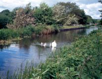
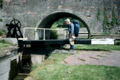
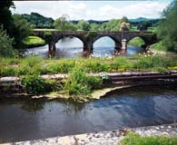
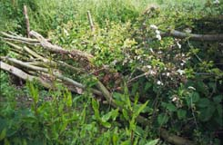
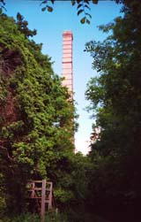

When we said our goodbyes, Leslie very kindly gave us more of the good cake, as well as bananas and fruit juice cartons. We were back beside the Severn for a good while, again on flood control embankments. The Breidden Hill was on our right, and we were sorry to see it being eaten away by quarrying. We came back to the Montgomery Canal for several very enjoyable miles. There was a swan family, as well as other groups of swans. There were interesting locks. There was an aquaduct taking the canal over the Vrynwy River.
|  |  |  |
And finally there were the views of Llanymynech Hill and the Heritage Site kiln chimney ahead of us. We were eager to get to Llanymynech. A few months earlier, Penny had been there for a week, with a group of conservation volunteers. They were working at the Heritage Site there, doing improvements and learning at the same time. Several days had been spent on hedge-laying, and Penny had told us how to find the newly laid hedge, and "her" section in particular. We were extremely excited when we managed to follow her directions and find the hedge! I took pictures, to show her that the new shoots were growing well. We saw a woman who was studying a wildflower. I asked her what it was, since it was one we had been seeing. Then I mentioned that our daughter Penny had been here in March, with the BTCV group. She matter-of-factly said "Yes, I met Penny." She had even taken a picture of Penny for the local newspaper! She offered to show us the big kiln, which is the centerpiece of the Heritage Site. This was a unique sort of kiln. It was an enormous cave-like structure, roughly 60 by 120 feet. They kept fires going constantly, moving from one section of the kiln to another. They burned the limestone to make agricultural lime. The brick chimney for the kiln is more than 100 feet tall, and is impressively high when you stand beside it and look up.
We ate our lunch while sitting on the steps (in the photo) up to a traditional kiln, wandered around a bit more, and then finally left the Heritage Site, still feeling very exhilarated and happy. We next went up Llanymynech Hill (which is disfigured by the quarrying, but has extensive views), past a golf course (where we talked with some men on the 4th tee and tried to avoid being hit as we walked near the green), down the other side through a woods (stopping to admire the purple orchids, which like limestone soil), up again along several miles of lanes with good views, to our B&B in Nantmawr. We took off our gaiters and boots before even knocking at the door, since it was clearly a very clean, tidy house. Our room was downstairs, with sliding doors out into their very interesting back garden and yard. The yard sloped steeply down to two large ponds which Bill and June kept stocked for people to fish in. A disused quarry railway line also ended there!
| Previous Day | Next Day | Home Page |